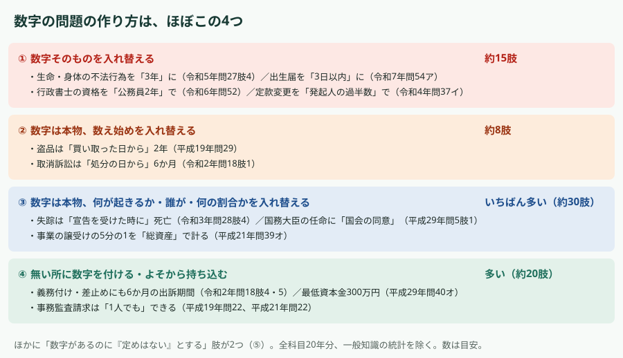
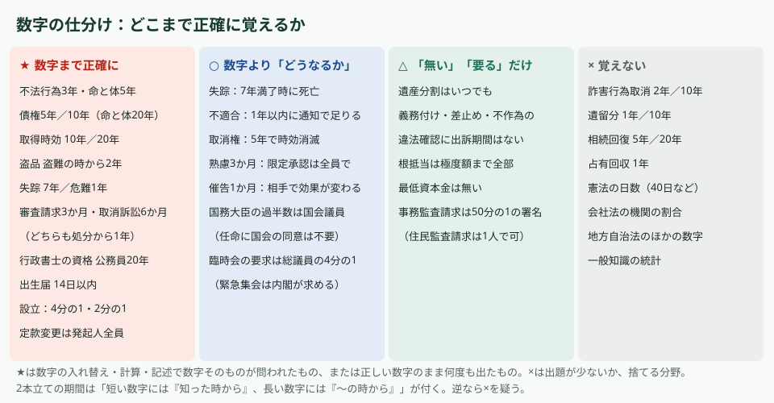
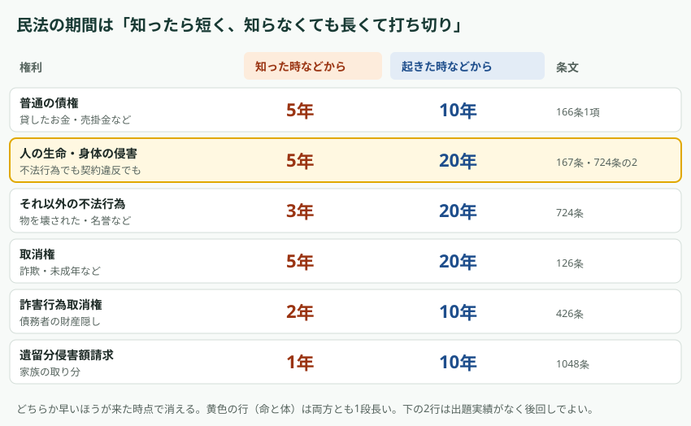
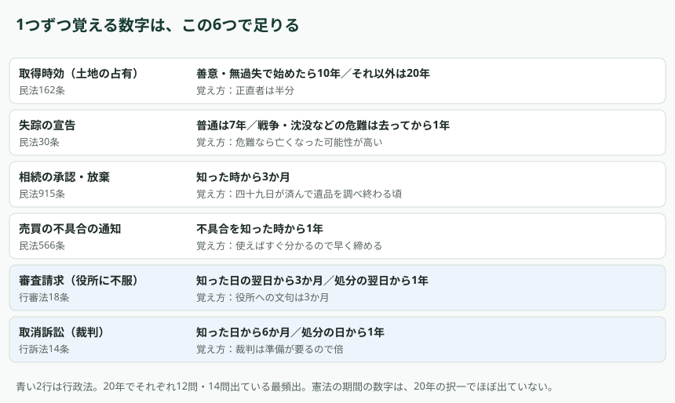
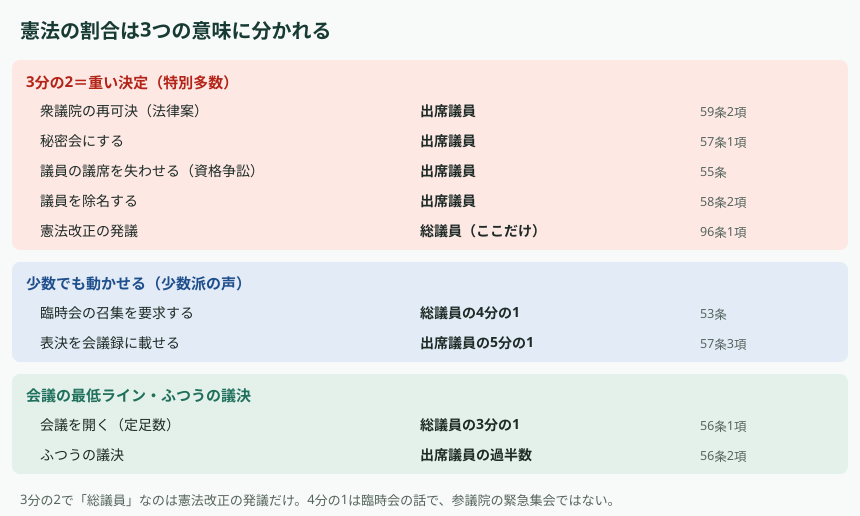

CONCLUSION
結論
数字そのものを入れ替えた誤りの肢は、20年で約15肢しかありません。民法で「3年か5年か」を数字で問うたのは、生命・身体の不法行為を3年にした令和5年問27肢4の1回だけでした。
誤りの肢の約7割は、数字は本物のまま「何が起きるか」を入れ替えるか、期間や要件の無い所に数字を付ける作り方です。だから、数字まで正確に覚えるのは下の★だけで足ります。残りは「どうなるか」と「あるか無いか」を覚えます。
覚え方は、表を毎朝と寝る前に1回ずつ声に出して読むだけにします（1回1分ほど）。数字は試験の直前に見直した分がそのまま点になりやすいので、前日と当日の朝にもう一度見ます。
HOW THEY ASK
数字の問題の作り方は、ほぼ4つ
平成18〜令和7年度の全科目（択一・多肢選択・記述）から、期間・割合・人数・年齢・金額・回数が出てくる肢を抜き出し、誤りの肢の作り方で分けました。一般知識の統計と、事例の設定にすぎない数字（「Aが100万円を貸した」など）は除いています。

① 数字そのものを入れ替える（約15肢）
- 生命・身体を害する不法行為を「知った時から3年」に（正しくは5年）。令和5年問27肢4
- 所有者が別にいると知っている占有者が「10年」で取得（悪意なら20年）。平成18年問29肢1。平成29年問30は年数を足して10年・20年に届くかを計算させた
- 記述で「盗難の時から2年」を書かせた。平成25年問46
- 行政書士の資格を「公務員として通算2年以上」に（正しくは20年。高校卒業者などは17年）。令和6年問52
- 出生届を「3日以内」に（正しくは14日以内、戸籍法49条）。令和7年問54
- 発行可能株式総数の定款変更を「発起人の過半数」で（正しくは全員の同意）。令和4年問37
- 行政不服審査法の総代を「1人選ばなければならない」に（3人を超えない範囲で互選できる。「任意」を「義務」にした③も混ざる）。令和6年問14
- 条例の罰則の上限を「1千万円以下の罰金」に（100万円以下）。平成22年問8。特別区の住民投票を「3分の2以上」に（過半数）。平成27年問22。どちらも地方自治法で、勉強しない範囲
- 会社法の機関（取締役の人数、監査役の選任議案に「監査役全員の同意」（平成27年問39。正しくは過半数）、監査役の解任の決議要件など）でも入れ替えがあるが、勉強しない範囲
この型で狙われた数字だけは、数字まで正確に覚えます。
② 数字は本物、数え始めを入れ替える（約8肢）
- 盗品の2年を「買い取った日から」「オークションの日から」に（正しくは盗難の時から）。平成19年問29の肢1・2・5（肢4は保管費用の話で③）
- 交通事故の損害賠償を「事故の時から3年」に（正しくは損害と加害者を知った時から）。平成24年問34。今の法律では人身損害は5年なので、数字そのものも違う
- 相続回復請求権を「死亡の時から5年」に（正しくは侵害を知った時から）。平成24年問35
- 取消訴訟を「処分の日から6か月」に（正しくは知った日から6か月、処分の日からは1年）。令和2年問18
- 審査請求の3か月を「知った日から」数えるか「知った日の翌日から」数えるかを、空欄で選ばせた（行政不服審査法は翌日から起算）。平成30年問16
2本立ての期間では、短い数字に「知った時から」、長い数字に「〜の時から」が付きます。短い数字に「事故の時から」「処分の日から」が付いていたら×を疑います。調べた2本立ての肢では、この当て方で外れたものはありませんでした。盗品の「盗難の時から2年」は2本立てではないので、数え始めごと覚えます。
③ 数字は本物、何が起きるか・誰が・何の割合かを入れ替える（約30肢、いちばん多い）
- 失踪の7年は正しいが「宣告を受けた時に死亡」に（正しくは7年の満了時）。令和3年問28
- 契約不適合の1年は正しいが「1年以内に請求」に（1年以内に通知すれば足りる）。令和3年問33
- 取消権の5年は正しいが「追認があったと推定」に（時効で消える）。平成23年問27
- 熟慮期間の3か月は正しいが「単独で限定承認できる」に（相続人全員で）。平成24年問35
- 制限行為能力者の相手方の催告（1か月以上）は正しいが、催告の相手や効果（追認か取消しか）をすり替え。平成18年問27、平成21年問30
- 国務大臣の過半数は国会議員、は正しいが「任命に国会の同意が要る」に。平成29年問5
- 事業の譲受けの5分の1を「総資産」で計る（譲受けは純資産）。平成21年問39
- 閣議の全員一致は慣例として正しいが、「憲法に書いてある」とした（明文はない）。平成29年問5
- 成年被後見人の遺言に立ち会う「医師2人」を「3親等内の親族」に置き換えた。平成29年問35
この型は、数字を覚えていても解けません。覚えるのは「その数字のあとに何が起きるか」「誰がするか」「何を基準に計るか」です。
④ 無い所に数字を付ける・よそから持ち込む（約20肢）
- 不作為の違法確認・義務付け・差止めの訴えにも6か月の出訴期間（どれも無い）。令和2年問18
- 遺産分割は「相続から3か月を過ぎたら」（熟慮期間を持ち込んだ。遺産分割はいつでも）。令和4年問35
- 根抵当権に「利息は2年分まで」（極度額まで全部）。令和2年問29、令和4年問29
- 株式会社の最低資本金は300万円（最低資本金の制度は無い）。平成29年問40
- 事務監査請求は「1人でも」できる（選挙権者の50分の1以上の署名が要る。1人でできるのは住民監査請求）。平成19年問22、平成21年問22
- 参議院の緊急集会を「総議員の1/4の要求で」（1/4は臨時会の話）。令和4年問6
- 処分の通知から1年たっていないので出訴期間は大丈夫（知った日から6か月が先に来る）。令和5年問17
- 裁判官の「懲戒免職」に全員一致が要る（懲戒免職という処分自体が無い）。令和5年問5
- 数字を書かずに「一定数」「法定数」と言う形もある。意見公募に「法定された数」の意見が要る（平成24年問12）、住民監査請求に「有権者の一定数」が要る（平成29年問24）。どちらも、そんな数の決まりは無い
この型は「その制度にその数字があるか」を覚えていれば解けます。
⑤ 数字があるのに「定めはない」とする（2肢）
- 最高裁判所と簡易裁判所の裁判官には定年の定めが無い、とした（どちらも70歳。ほかの裁判官は65歳、裁判所法50条）。平成19年問1
- 議長などから臨時会の招集を請求されても、長がいつまでに招集するかの定めは無い、とした（請求の日から20日以内、地方自治法101条4項）。令和元年問22
④の逆向きです。数は少ないので、「無い」と言い切る肢を見たら一度疑う、くらいで足ります。
SORTING
どこまで正確に覚えるか

★ 数字まで正確に
- 不法行為は知った時から3年、命・体は5年
- 普通の債権は5年／10年（命・体は長いほうが20年）
- 取得時効は善意・無過失で始めたら10年／それ以外は20年
- 盗品は盗難の時から2年
- 失踪は7年／危難は去ってから1年
- 審査請求3か月（知った日の翌日から）・取消訴訟6か月（知った日から）。どちらも処分から1年
- 行政書士の資格は公務員として通算20年（高校卒業者などは17年）
- 出生届は14日以内
- 設立：公開会社の設立時発行株式は発行可能株式総数の4分の1以上、資本準備金にできるのは2分の1まで、発行可能株式総数の定款変更は発起人全員の同意
○ 数字は感覚でよく、「どうなるか」を覚える
- 失踪：7年が満了した時に死亡とみなす
- 契約不適合：1年以内に通知すれば足りる
- 取消権：5年で時効により消える
- 熟慮期間3か月：限定承認は相続人全員で
- 催告1か月以上：誰に出したかで、追認か取消しかが変わる
- 国務大臣の過半数は国会議員（任命に国会の同意は不要）
- 臨時会の召集要求はいずれかの議院の総議員の4分の1（緊急集会は内閣が求める）
△ 「無い」「要る」だけ覚える
- 遺産分割に期限は無い
- 義務付け・差止め・不作為の違法確認に出訴期間は無い
- 根抵当権に「2年分」の制限は無い（極度額まで）
- 最低資本金は無い（300万円は配当の制限）
- 事務監査請求には署名が要る（住民監査請求は1人でよい）
× 覚えない
- 詐害行為取消権（2年／10年）、遺留分（1年／10年）、相続回復請求権（5年／20年）、占有回収（1年）
- 憲法の国会の日数（解散後40日以内の総選挙など）
- 会社法の機関の割合、地方自治法のほかの数字
- 一般知識の統計
20年の過去問で数字が問われていないか、今年は勉強しないと決めた範囲です。
CIVIL LAW
民法の期間は「知ったら短く、知らなくても長くて打ち切り」
民法の期間の多くは2つの数字の組です。短いほう（1〜5年）は「知った時から」数え、知ったなら早く動きなさい、という意味です。長いほう（10年か20年）は「起きた時から」数え、知らなくてもいつまでも争えるわけではない、という打ち切りです。どちらか早いほうが来た時点で消えます。

「借金は5年か10年か」
両方です。返してもらえると知った時から5年、返してもらえる時（返済日）から10年で、早いほうで消えます（民法166条1項）。返済日は貸した本人が知っているのが普通なので、実際はほとんど5年で消えます。改正前の民法は10年だけだったので、古い説明と混ざると迷います。
ONE BY ONE
1つずつ覚える数字には、理由か場面を1つ付ける

- 取得時効10年／20年：正直者（善意・無過失）は半分の期間で済む。
- 失踪7年／1年：7という数字に深い理由はない。危難のほうが短いのは、その時点で亡くなっている可能性が高いから。
- 相続の熟慮期間3か月：葬儀と四十九日が済み、遺品や借金を調べ終わる頃。
- 売買の不具合の通知1年：使えばすぐ分かるので早く締める。
- 審査請求3か月・取消訴訟6か月、どちらも1年で打ち切り：役所への文句は3か月、裁判は準備が要るので倍の6か月。義務付け・差止めに出訴期間が無いのは、処分がまだ無いので「処分から何か月」が数えられないから。
CONSTITUTION
憲法の割合は「意味」で3つに分ける
憲法で割合を使って誤りを作ったのは、令和4年問6の「臨時会の1/4を緊急集会へ持ち込む」だけです。平成28年問5では1/5・1/3・2/3が3つとも正しい肢として並び、令和7年問5では1/4が問題文に書いてあるだけでした（空欄は「臨時」など）。平成22年問7は定足数の低さを題材にした文章です。数字そのものを入れ替えた肢はありません。日数で出たのは再婚禁止期間の判例の100日（平成28年問7、令和元年問4）くらいで、国会の日数（解散後40日以内の総選挙など）は出ていません。ほかに、裁判官の「懲戒免職に全員一致」（令和5年問5、懲戒免職自体が無い）、閣議の全員一致を「憲法の明文」とした肢（平成29年問5）があります。

- 3分の2で「総議員」なのは憲法改正の発議だけ。再可決・秘密会・資格争訟・除名は「出席議員」の3分の2。
- 4分の1は臨時会の召集要求。参議院の緊急集会は内閣が求めて開く。
BY SUBJECT
科目ごとの結果
- 決まりとしての数字が出てくる肢の数（20年、概数）：民法約70、商法・会社法約50、行政法約30、憲法約12、基礎知識の法令系約8、基礎法学5。
- 民法：数字の多くは期間。割合（持分の3分の1など）は事例の設定として出るだけ。年齢は15歳（遺言・養子縁組）が何度か出ているが家族法なので今年は飛ばす。
- 行政法：期間は審査請求・出訴期間に集中。割合・人数はほとんどが地方自治法の直接請求。
- 憲法：上の割合だけ。日数はほぼ出ていない。
- 商法・会社法：割合がいちばん多いが、多くは機関（問38〜40）の数字で勉強しない範囲。問37（設立）は★の3つ。
- 基礎知識（法令系）：最近、数字そのものの入れ替えが続いている（令和6年問52、令和7年問54）。
改正で数字が変わったもの
- 嫡出否認の訴え：平成27年問46（記述）は「出生を知った時から1年以内」だったが、2024年4月施行の改正で父は「子の出生を知った時から3年以内」（民法777条）。
- 個人情報保護法の「5,000人分」の線引き（平成24年問54）は、2017年施行の改正でなくなった。
- 行政不服審査法の不服申立期間「60日」（平成18年問16）は、2016年施行の改正で3か月になった。
古い過去問の数字をそのまま覚えない。
IN THE EXAM
本番での使い方
- 肢に数字が出たら、まず「数え始め」「そのあと何が起きるか」「誰が・何を基準に」を見る（②③）。誤りはここに入っていることが多い。
- 2本立ての期間なら、短い数字に「〜の時から」が付いていないかを見る（②）。
- 「その制度にその数字（期間・署名・最低額）があったか」を思い出す（④）。
- 最後に数字そのものを見る。正確に覚えているのは★だけでよい。
調べ方：平成18〜令和7年度の全1,139問を語句で検索し、数字の出てくる肢を1つずつ読んで分けた（2026-11-03）。数は目安で、別のAIに数え漏れを調べ直させた結果も反映している。条文は2026年4月1日時点。過去問の年度・問番号は合格道場の問題ページへのリンク。